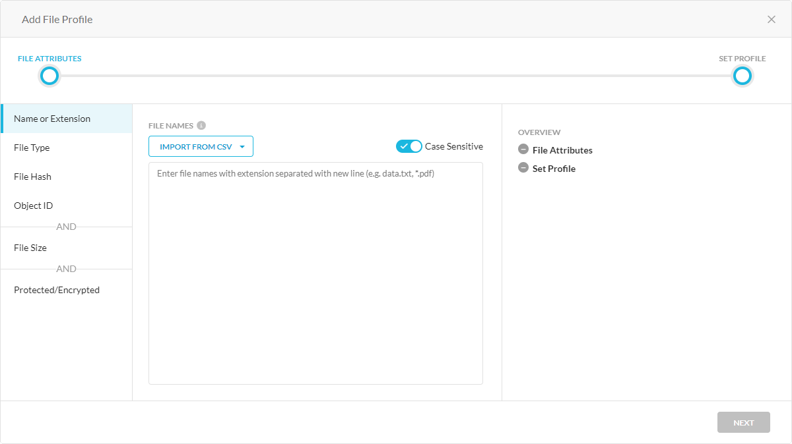
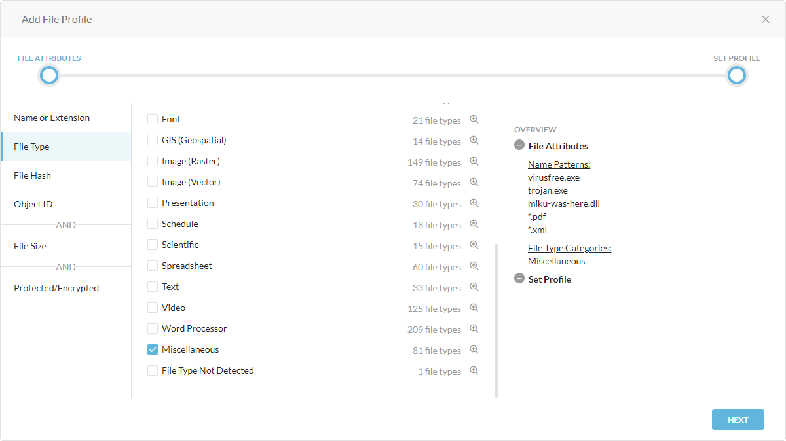
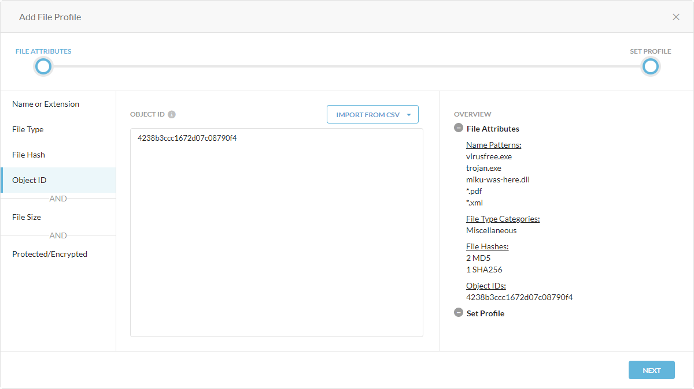
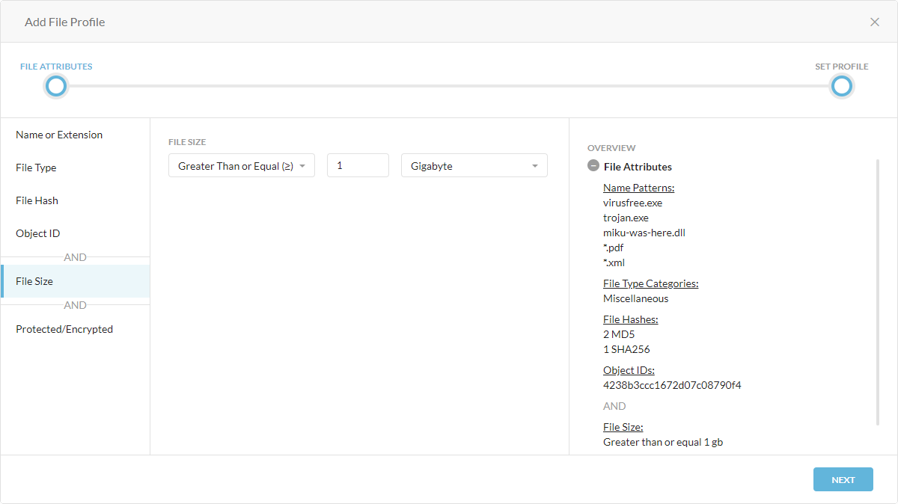
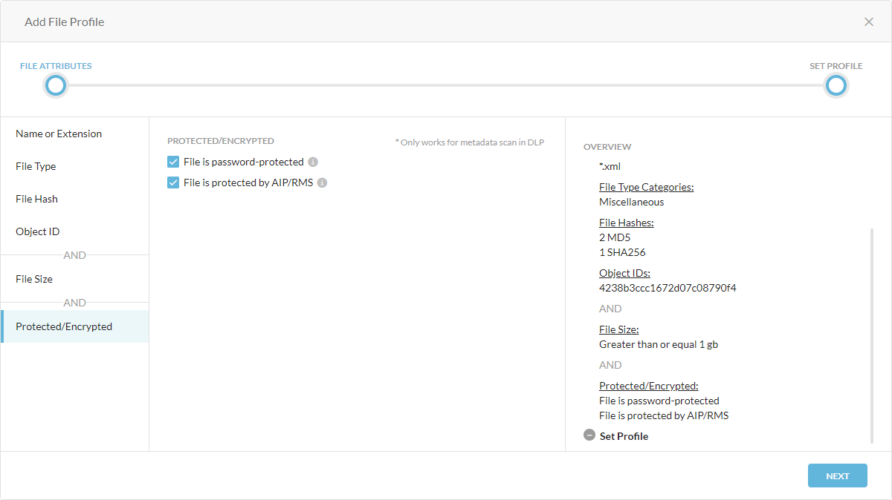
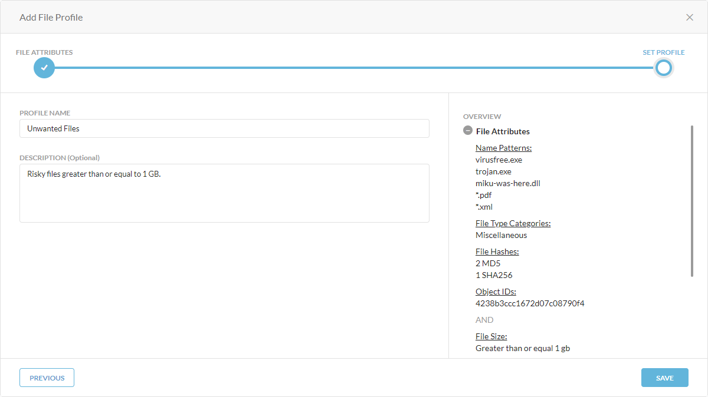

Adding a File Profile
Note
To enable this feature, contact Netskope Sales.
Data Loss Prevention (DLP) and Threat Protection use file profiles to allow or exclude specific files based on the following attributes:
Type | Attribute |
|---|---|
OR | File name or extension |
File type | |
File hash | |
Object ID | |
AND | File size |
Protected/encrypted |
You can configure more than one attribute for each file profile. Depending on the attribute type (OR and AND), Netskope scans for files that meet the criteria. For example, if you add a file profile with a file type and file hash attribute, Netskope will scan for files that have the specified file type or file hash. You can also require Netskope to scan for file size and whether a file is password-protected or encrypted. For example, if you add a file profile with a file type, file hash, and file size attribute, Netskope will scan for files that have the specified file type or file hash and matches the configured file size.
To add a file profile:
Go to Policies > File.
Click New File Profile.
In the Add File Profile window, under File Attributes:
Name or Extension: Enter file names with extensions on separate lines or separated by commas. You can also use up to two wildcard (*) characters per line. Click Import from CSV to upload file names from a CSV file:
Add to List: Add more file names or extensions in the CSV file to the existing entries.
Replace File: Replace the existing entries with the file names or extensions in the CSV file.
File Type: Select a file type or category. If you select a category, all file types are selected by default. Click to view and select or deselect specific file types in each category. Click Categories to go back to the category view. Netskope recommends selecting categories instead of specific file types because it provides more coverage.
For a list of all the supported file types and categories, see Supported File Categories and File Types.
Note
This attribute is only supported for DLP profiles.
File Hash: Select the hash type of the files, such as SHA-256 and MD5, and enter the hash values on separate lines. Click Import from CSV to upload file hashes from a CSV file (8 MB limit):
Add to List: Add more file hashes in the CSV file to the existing entries.
Replace File: Replace the existing entries with the file hashes in the CSV file.
To delete all entries in the MD5 or SHA-256 file hash list, click More and then Remove.

Object ID: Enter object IDs of the files. Click Import from CSV to upload object IDs from a CSV file:
Add to List: Add more object IDs in the CSV file to the existing entries.
Replace File: Replace the existing entries with the object IDs in the CSV file.
File Size: Configure the file size criteria of the file by choosing an operator, entering a size number, and choosing a unit. The file size is an AND attribute.
Protected/Encrypted: Select the type of protection or encryption of the file. The protected/encrypted options are an AND attribute.
File is password-protected: The file is a password-protected ZIP, PDF, or Office document.
File is protected by AIP/RMS: The file is protected/encrypted by Azure Information Protection (AIP) or Active Directory Rights Management Service (AD RMS)
Note
This feature is only supported for metadata scan in DLP.

Click Next.
Under Set Profile:
Profile Name: Enter a name for the file profile.
Description: (Optional) Enter a description for the file profile.
Click Save.
Click Apply Changes.
After adding a file profile, you can select it when configuring the DLP or Malware Detection profile to allow or block certain files or their actions based on their attributes.